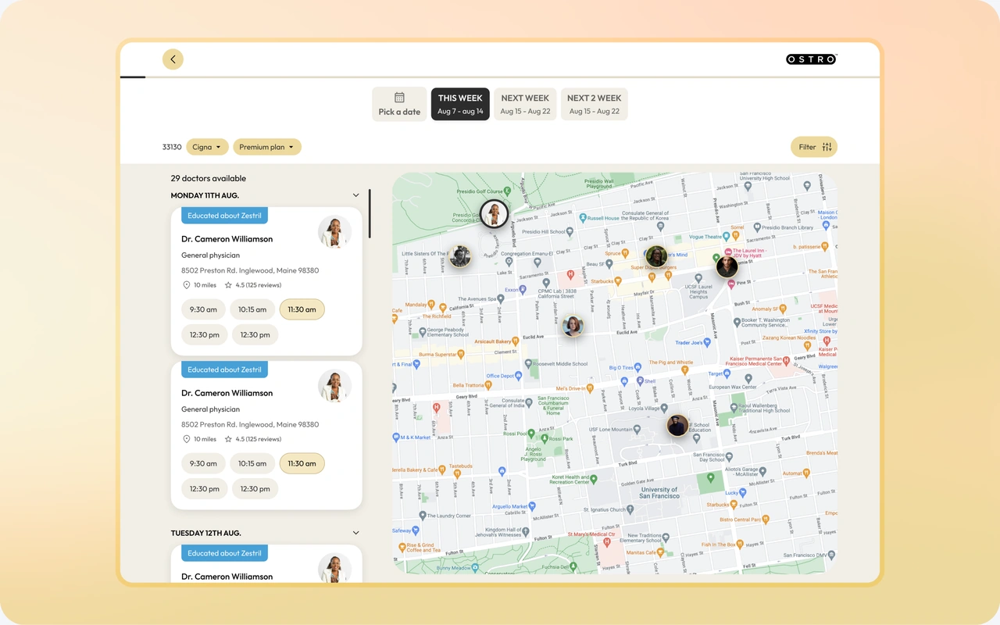

What was the project about?
An healthcare marketplace that helps patients find and book appointments with doctors across multiple healthcare providers. Instead of booking through a single hospital, patients could search for doctors based on their location, insurance coverage, and availability.
The booking experience sat at the center of the business. Every extra step or confusing decision increased the chances of someone abandoning their appointment before reaching checkout.

The Problem
Patients were trying to balance insurance coverage, location, availability, and personal schedules, all at once when booking an apointment.
The team needed to improve the booking experience without hiding information that patients relied on to make confident decisions. The challenge became finding the right balance between giving people enough choice and preventing decision fatigue.
Discovery
Rather than redesigning the existing flow, I started by studying how other healthcare marketplaces approached the same problem.
I benchmarked products including Zocdoc, Practo, Summit Health, and Calendly. While Calendly wasn't a healthcare product, it offered one of the clearest appointment booking experiences at the time. I completed a SWOT analysis for each product to understand where they succeeded, where they introduced friction, and which interaction patterns could be adapted to a healthcare marketplace.
One pattern stood out. Most products optimized around showing more options. Few focused on helping people narrow those options before presenting results.

Competitive analysis comparing three healthcare marketplaces and Calendly to identify opportunities for improving the booking experience.
Design Exploration
Rather than iterating on a single solution, I explored five different booking flows, each testing a different approach to provider discovery and appointment scheduling. After evaluating the strengths and tradeoffs of each concept, we narrowed them down to the two strongest candidates for A/B testing and user validation.
Concept 1. Immediate Discovery
Users selected their location and insurance provider before entering the marketplace. Available doctors were displayed immediately, organized by day, with options to browse future dates or choose a custom date. This approach prioritized speed by giving users immediate access to a broader range of providers and appointment times.

This user flow presented a wide range of options to choose from, offering users a comprehensive and flexible experience.


Concept 1 user flow from start to finish
Concept 2. Guided Discovery
Users selected their location, weekly availability, and insurance provider before viewing results. The platform then showed only doctors who matched those preferences, grouped by This Week, Next Week, and Following Weeks. By filtering appointments upfront, the experience reduced the number of providers and time slots users needed to compare.

This user flow is more extensive yet simplifies decision-making by offering fewer options, enhancing clarity and user experience.


Concept 2 user flow from start to finish
A/B Testing Strategy
I created the usability testing plan, success criteria, and testing documentation before handing both concepts to an external agency for moderated A/B testing.
The evaluation focused on:
- Task completion time
- Decision time on the provider selection screen
- Task success rate
- User preference (NPS)
- Qualitative feedback and observed usability issues
My Role
I was responsible for:
- Competitive research
- SWOT analysis
- Booking strategy exploration
- User flow design
- Interaction design
- A/B testing framework
- Usability testing documentation
- Research handoff
Reflection
This project reinforced that reducing friction isn't always about removing steps.
Sometimes the better experience asks users for more information upfront so the product can make better decisions on their behalf. Other times, getting users to the content as quickly as possible is the right approach.